← Retour au Dossier 06 · Graphisme Sport & Photo

CRÉATION GRAPHIQUE
18 CARTES COUREURS
CYCLISME WORLDTOUR
Collection Tour de France
Série de 18 cartes graphiques à collectionner consacrées aux coureurs du peloton, réalisées sous Adobe Illustrator et Photoshop en reprenant les motifs et couleurs des maillots officiels des équipes.
La collection intégrale · 18 cartes

Tadej Pogačar 
Jonas Vingegaard 
Isaac Del Toro 
Nicolas Prodhomme 
Paul Seixas Bruno Armirail Matteo Jorgenson Sepp Kuss Adam Yates Tim Wellens Nils Politt Brandon McNulty Victor Campenaerts Edoardo Affini Florian Vermeersch Felix Großschartner Per Strand Hagenes Davide Piganzoli
Les coureurs du peloton (cliquez sur une carte pour l'agrandir)
Travail de détourage, de motifs géométriques vectoriels et d'harmonie colorimétrique par équipe.
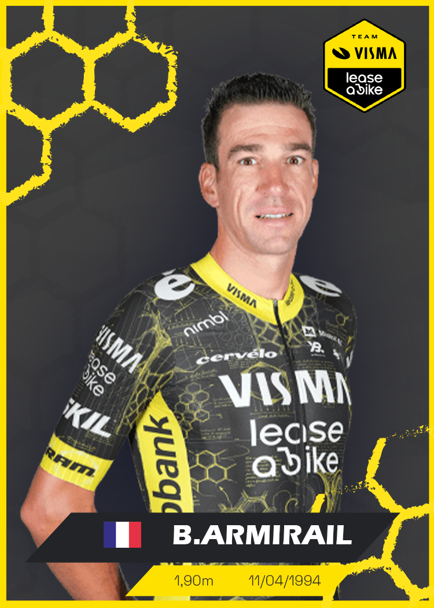
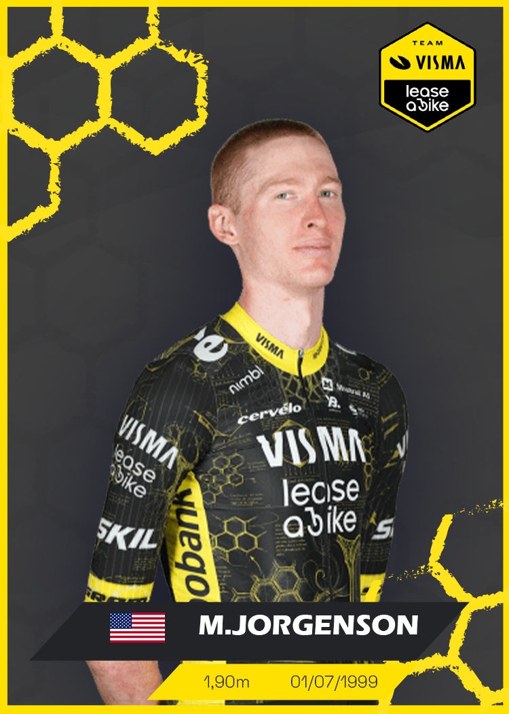
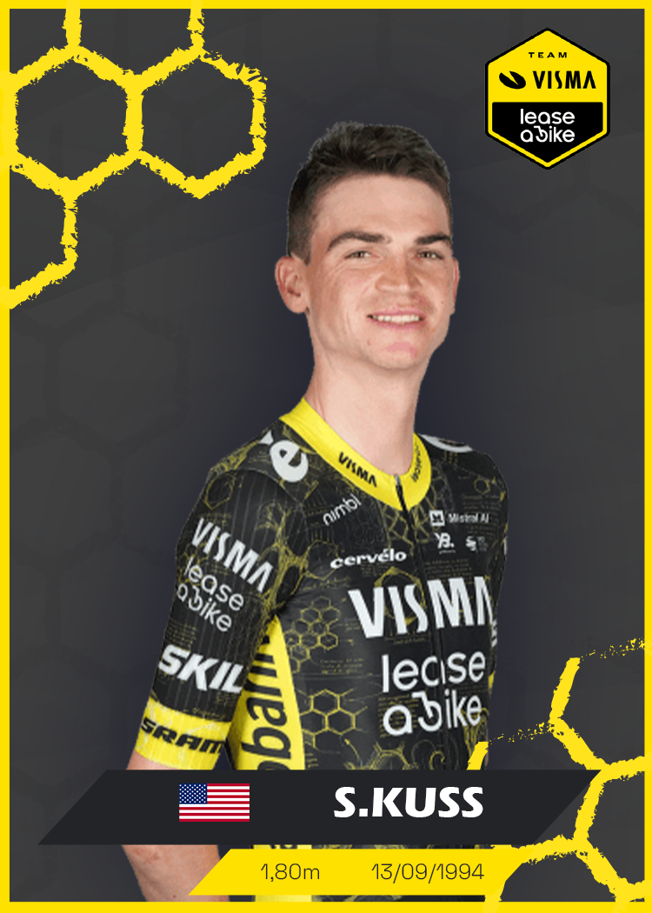
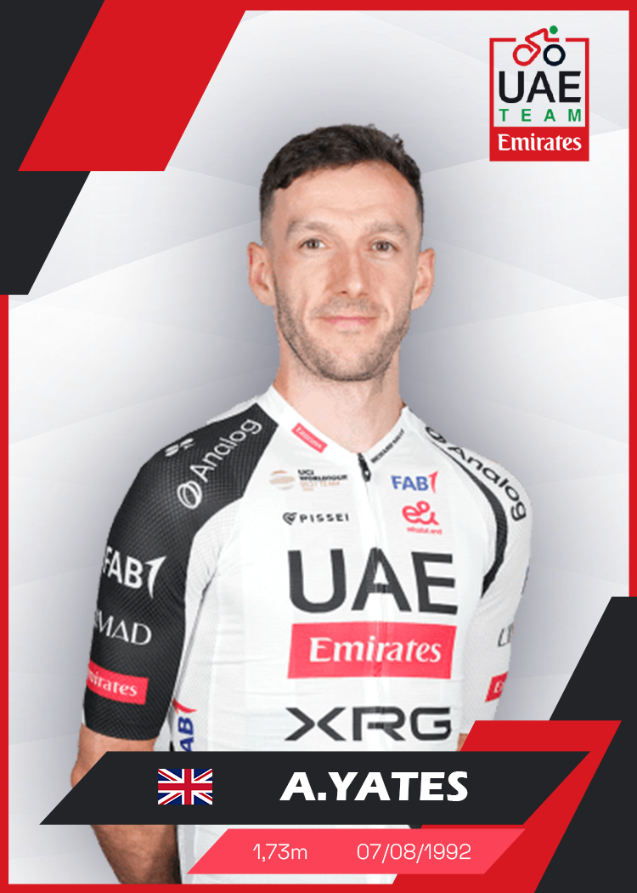
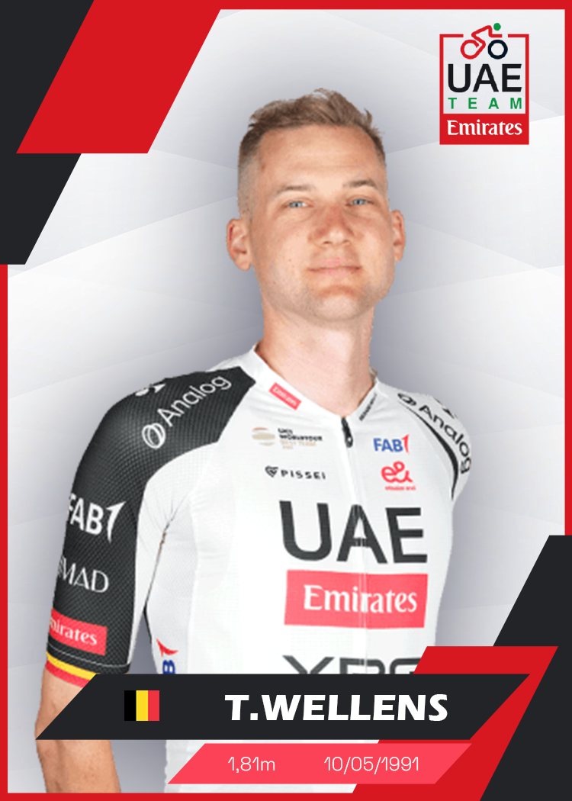
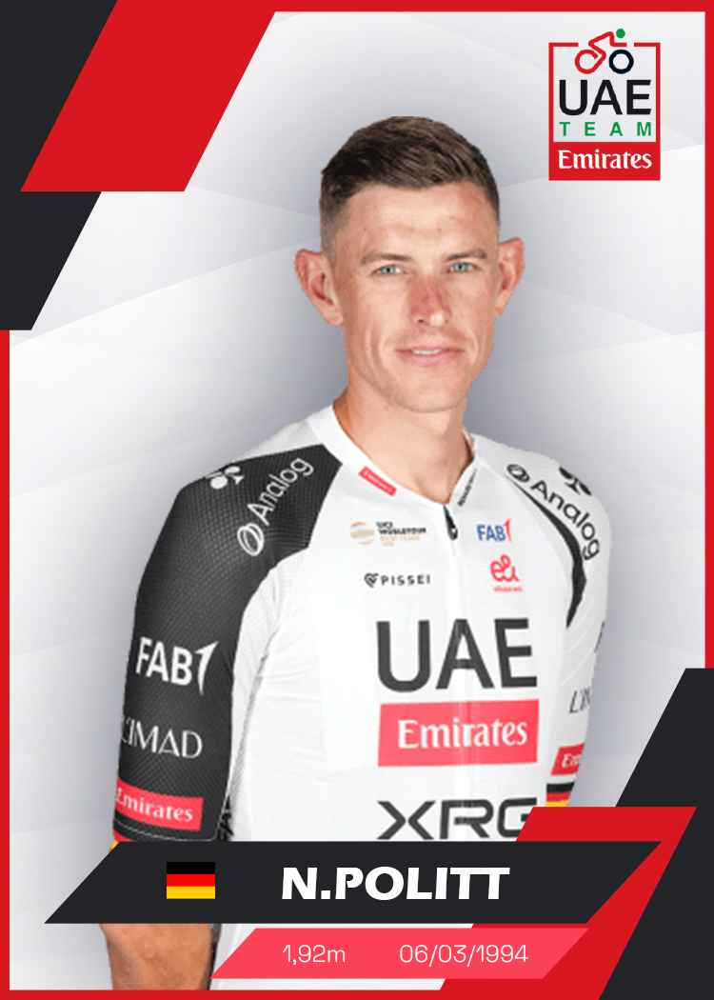
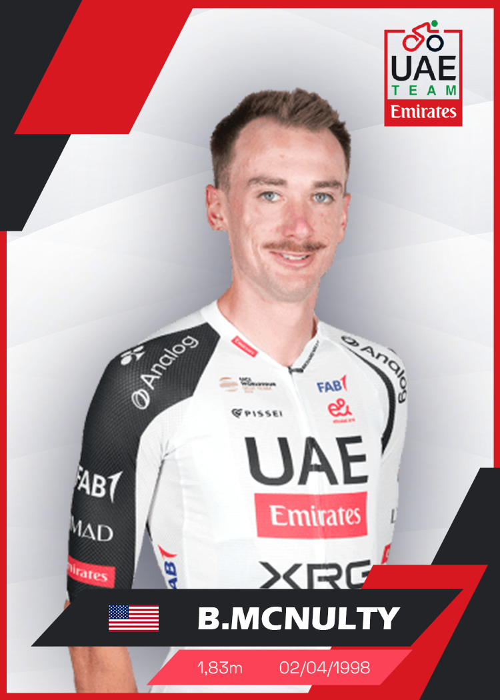
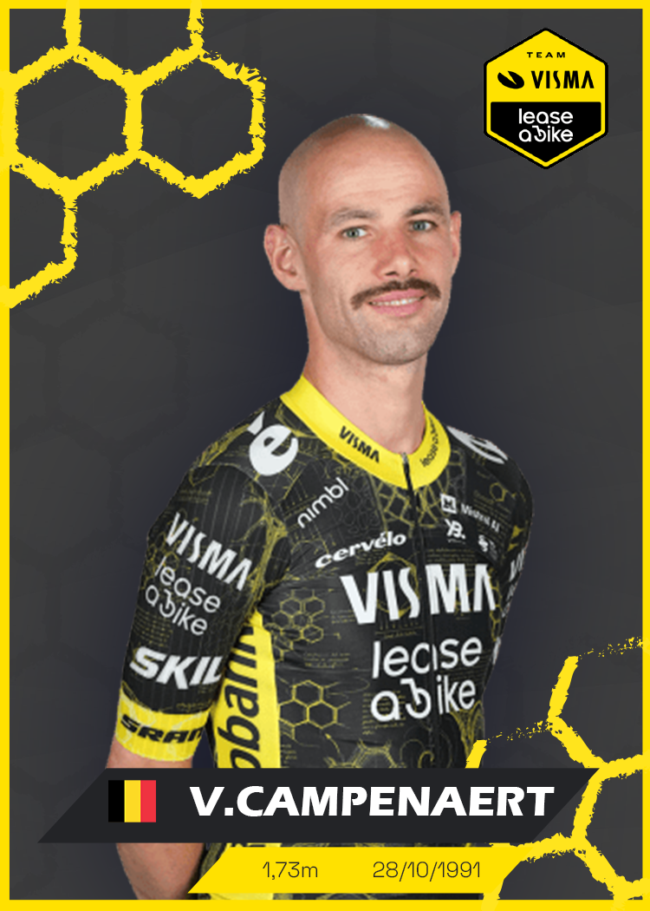
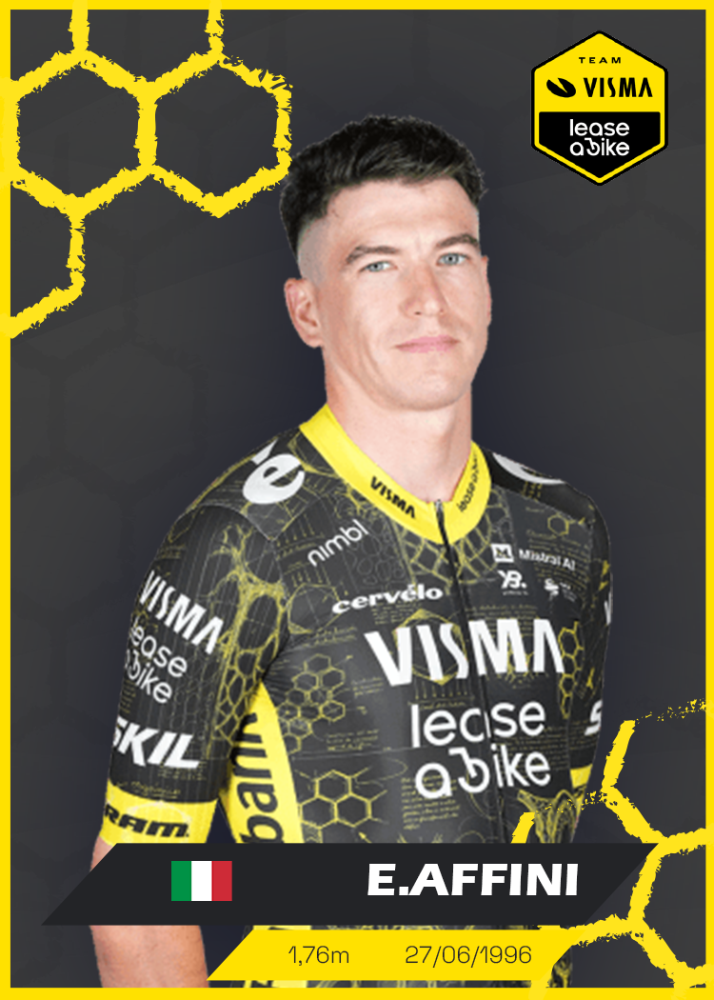
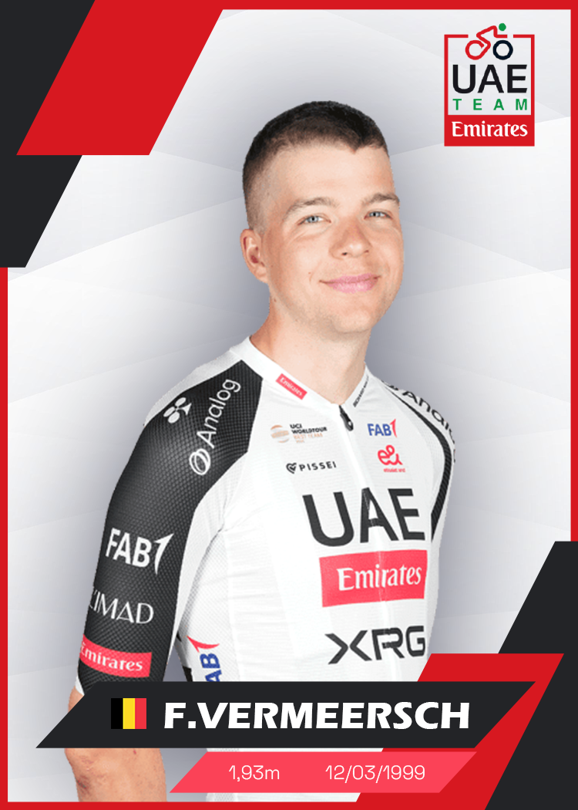
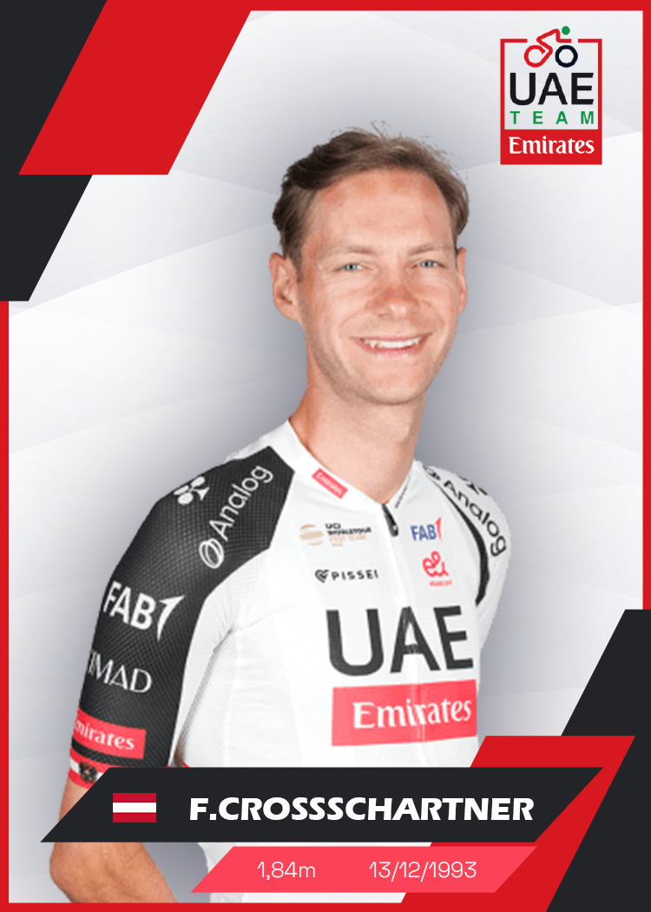
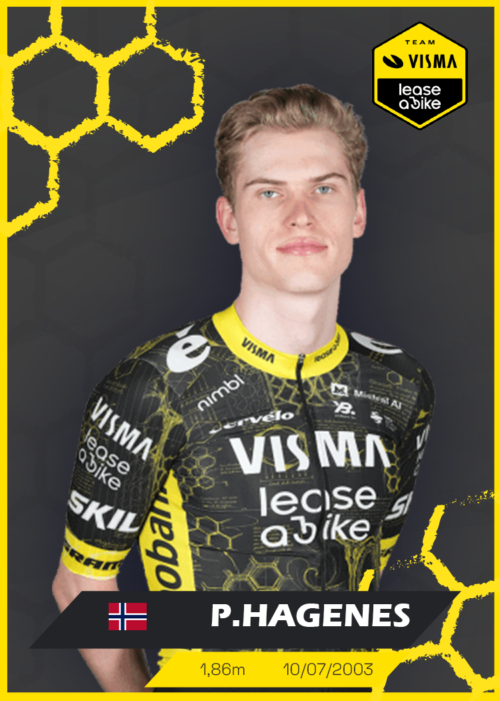
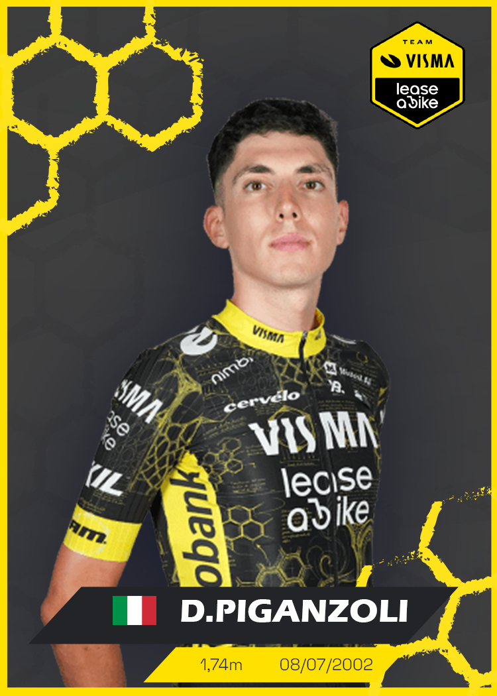